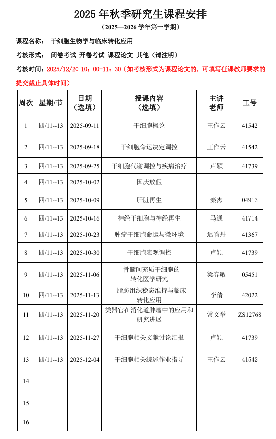

2025秋 · MED735011.01 · 王作云、卢颖、秦杰、马通、迟喻丹、梁春敏、李倩、常文举
来源：复旦教务系统教学大纲，本轮使用已授权账号下载。原始正文与考核信息；去除联系方式和网页脚本，内嵌图片按原字节去重保存。
干细胞生物学是近年来发展起来的新兴学科，也是当今生物学研究的热点领域之一，其涵盖的研究内容已涉及生命科学领域的诸多热点，相关研究成果在很多疾病的研究方面已经取得了突破性的成果。该课程在夯实学生干细胞基础知识的同时，帮助学生理解干细胞在组织稳态维持及肿瘤发生中的功能及作用机制，注重创新性和前沿性知识补充。
Stem cell biology is an emerging discipline that has developed rapidly in recent years and is one of the hot research fields in contemporary biology. Its scope encompasses numerous hot topics in the life sciences, and related research achievements have yielded breakthrough results in the study of many diseases. This course aims to solidify students' foundational knowledge of stem cells while helping them understand the function and mechanisms of stem cells in tissue homeostasis maintenance and tumorigenesis. It emphasizes incorporating innovative and cutting-edge knowledge.
本课程的整体教学目标：在掌握干细胞基础知识的同时，理解干细胞生物学与再生医学、基因工程学、肿瘤医学等学科交叉的基本方法技术和前沿进展，了解干细胞生物学基础科研成果向临床转化的应遵循的原则规律和发展前景。
本课程采取“讲授-研讨-实践-输出”的教学方式，强调学生中心、问题导向和探究式学习。在基础知识讲授部分采用模块化教学，讲教学内容划分为清晰模块（如：干细胞基本概念及调控规律、成体干细胞与组织稳态、干细胞与肿瘤发生、干细胞技术应用与临床转化），讲授中注重经典实验案例融入、里程碑式发现及重要疾病模型等，将抽象的概念具象化，同时通过启发式提问，引导学生深入思考研究领域的关键科学问题，结合多媒体动画、模式图等形式辅助学生理解复杂的过程和机制，并进行阶段性小结。在分组文献讨论汇报部分，由授课教师预先筛选与讲授内容相关，发表在高水平期刊的前沿文献，按照每组4-6人进行分组文献汇报，各组讨论分工并选出一位同学进行20-25分钟汇报，汇报内容包含：背景介绍、研究问题与假设、关键实验方法与技术、核心结果解读、结论与意义、亮点与局限性、未来方向、汇报制作与展示、引导讨论。教师适时追问、澄清概念、补充背景、连接课程知识、激发深度讨论，对汇报内容、讨论深度、展示技巧进行点评，并提炼该文献对课程主题的核心贡献和启示。理论讲授结束后每位同学在教师的指导下自主选题，学生预先提交选题依据和初步提纲，教师给予方向性指导和资源建议。学生综合运用所学知识，聚焦特定问题深入探究，通过信息检索、分析综合、逻辑论证与学术写作，培养学生的科研思维和创新能力。
教学内容及进度安排具体如下：

1.高绍荣.干细胞生物学[M].科学出版社, 2020.
2.裴雪涛.干细胞生物学[M].科学出版社, 2016.
3. R P (Robert Paul) Lanza. Essentials of stem cell biology[M]. Academic Press.2009
4. Daniel R Marshak，Richard L Gardner. Stem Cell Biology[M]. Cold Spring Harbor Laboratory Press.2001.
| 项目 | 比例 | 评定说明 |
|---|---|---|
| 出勤Attendance | 12.0% | 按时上课（1分/课程，共计12分）。 |
| 课堂表现Participation | 18.0% | 每次上课认真听课（1分/课程，共计12分）；积极与老师互动，按次数累计，最高6分）。 |
| 汇报Presentation | 10.0% | 文献汇报准备充分，组内配合默契，汇报时语言流畅，条理清晰。 |
| 课题论文Research Paper | 60.0% | 认真、准确完成干细胞相关文献阅读，并提交课程综述论文报告。 |